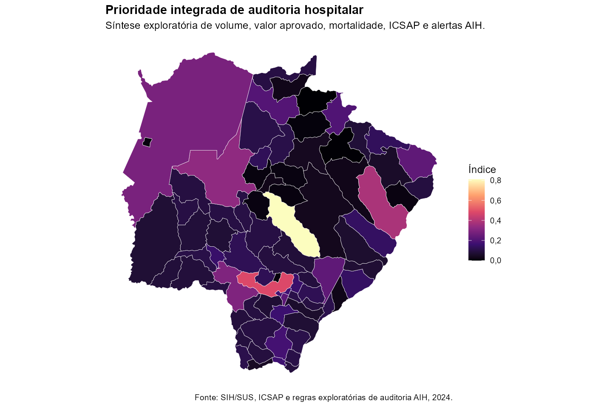
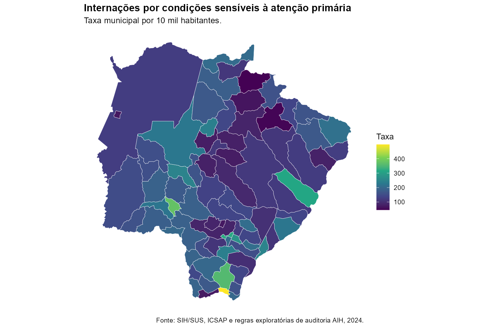
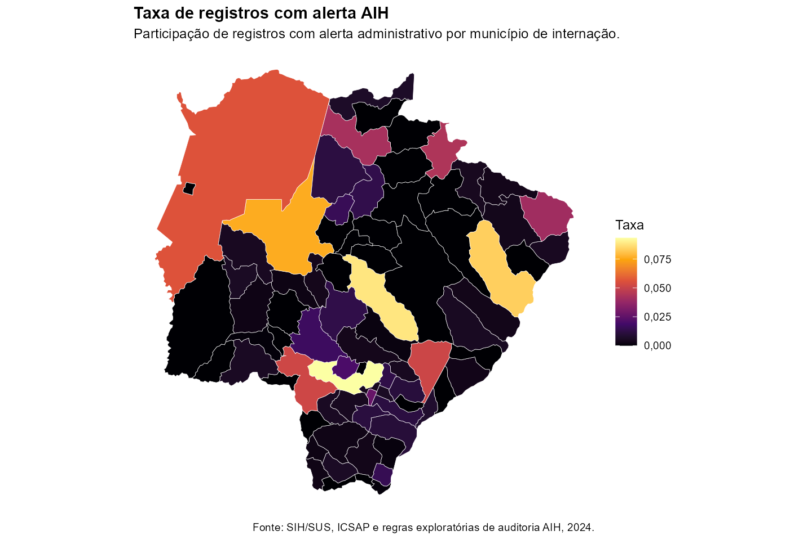
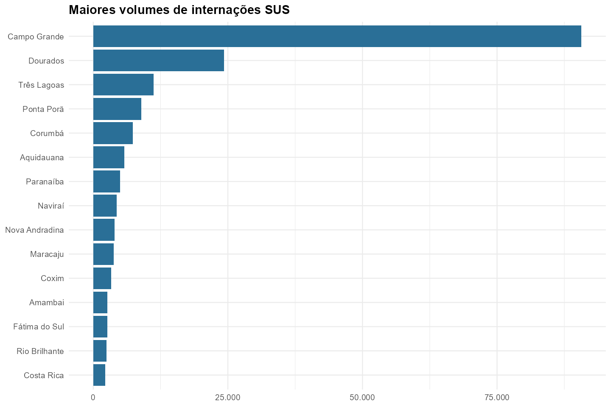
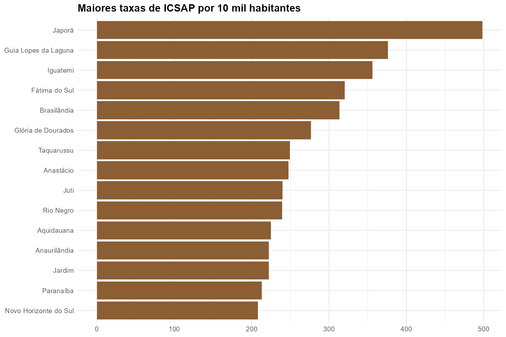
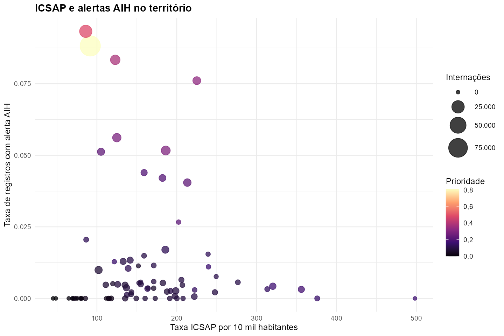

Mapa interativo de Mato Grosso do Sul
O mapa foi limitado ao território estadual; as camadas alternam prioridade integrada, taxa ICSAP e alertas AIH.
Análise descritiva e exploratória
| Município | Perfil | Prioridade | Taxa ICSAP/10 mil |
|---|---|---|---|
| Campo Grande | Polo hospitalar | 0,80988 | 91,6 |
| Dourados | Polo hospitalar | 0,48076 | 86,0 |
| Três Lagoas | Polo hospitalar | 0,38158 | 123,0 |
| Aquidauana | Alta ICSAP e alto alerta AIH | 0,32915 | 225,1 |
| Ponta Porã | Polo hospitalar | 0,29531 | 186,2 |
| Corumbá | Polo hospitalar | 0,28445 | 124,9 |
| Paranaíba | Alta ICSAP e alto alerta AIH | 0,22992 | 213,2 |
| Nova Andradina | Polo hospitalar | 0,22927 | 105,1 |





